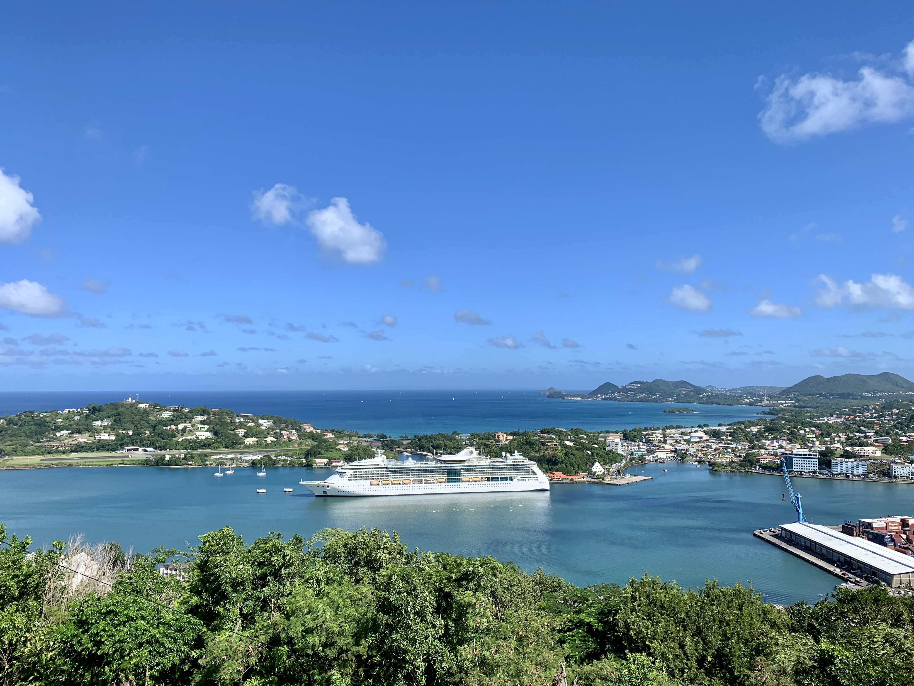

The Southern Caribbean is a group of islands that neighbor mainland South America in the West Indies. Saint Lucia lies to the north of the region, Barbados in the east, Trinidad and Tobago at its southernmost point, and Aruba at the most westerly section. The Southern Caribbean has the Caribbean to the north and west, the Atlantic Ocean on the east, and the Gulf of Paria to the south. Most of the islands are in the Windward Islands and the Leeward Antilles. Geologically, the islands are referred to as being a sub-continent of North America, although most islands sit on the South American continental plate. All of the Southern Caribbean islands are small, and are either volcanic or made of limestone coral, as they form at the ridge of the Caribbean and South American tectonic plates.

When I traveled to Southern Caribbean, I was on a cruise called Jewel of The Seas. We visited a number of nice caribbean islands including: San Juan, Barbados, St. Lucia, Antigua and Barbuda, Sint, Marteen, Us Virgin Islands, and St. Thomas. We ate many delicious meals when we were there. We also did many fun activities, such as: water slides, playing at the beach and making sand castles, and swimming. Also, funny story, when we were at one island, I really had to go to the bathroom, but they were charging $1 per visit to the bathroom, so our entire family just decided to wait and hold it until we got back on the cruise.